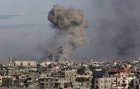
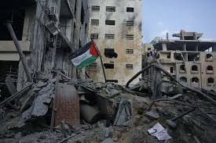

vedio
Gaza
Gaza City, is a Palestinian city in the Gaza Strip, with a population of 590,481 (in 2017), making it the largest city in the State of Palestine.
Inhabited since at least the 15th century BCE, Gaza has been dominated by different peoples and empires throughout its history. The Philistines made it a part of their pentapolis after the Ancient Egyptians had ruled it for nearly 350 years. Under the Roman Empire Gaza experienced relative peace and its port flourished. In 635 CE, it became the first city in Palestine to be conquered by the Muslim Rashidun army and quickly developed into a center of Islamic law. However, by the time the Crusaders invaded the country starting in 1099, Gaza was in ruins. In later centuries, Gaza experienced several hardships—from Mongol raids to floods and locusts, reducing it to a village by the 16th century, when it was incorporated into the Ottoman Empire. During the first half of Ottoman rule, the Ridwan dynasty controlled Gaza and under them the city went through an age of great commerce and peace. The municipality of Gaza was established in 1893.
Gaza fell to British forces during World War I, becoming a part of Mandatory Palestine. As a result of the 1948 Arab–Israeli War, Egypt administered the newly formed Gaza Strip territory and several improvements were undertaken in the city. Gaza was occupied by Israel in the Six-Day War in 1967, and in 1993, the city was transferred to the newly created Palestinian National Authority.